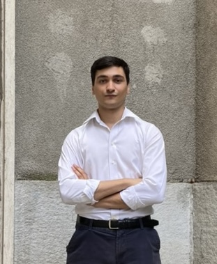

Data Science & Engineering
MSc student in Data Science and Engineering at Politecnico di Torino. I combine a strong mathematical foundation with hands-on programming to build interpretable models and efficient data pipelines. Recently, I served as a Teaching Assistant for the Computer Science course and explored my interest in quantitative finance as a member of the Research area within the Starting Finance team.

Implementation and benchmarking of VPG, Actor-Critic, and PPO algorithms. The project focuses on optimizing policy-based methods to solve complex control tasks within OpenAI Gym environments.
Developed a robust classification system using Support Vector Classifiers (SVC). The model leverages textual metadata to categorize news articles with high precision across multiple domains.
A comprehensive study of matrix factorization and dimensionality reduction. Applied PageRank, PCA, and Spectral Clustering to extract structural insights from high-dimensional datasets.